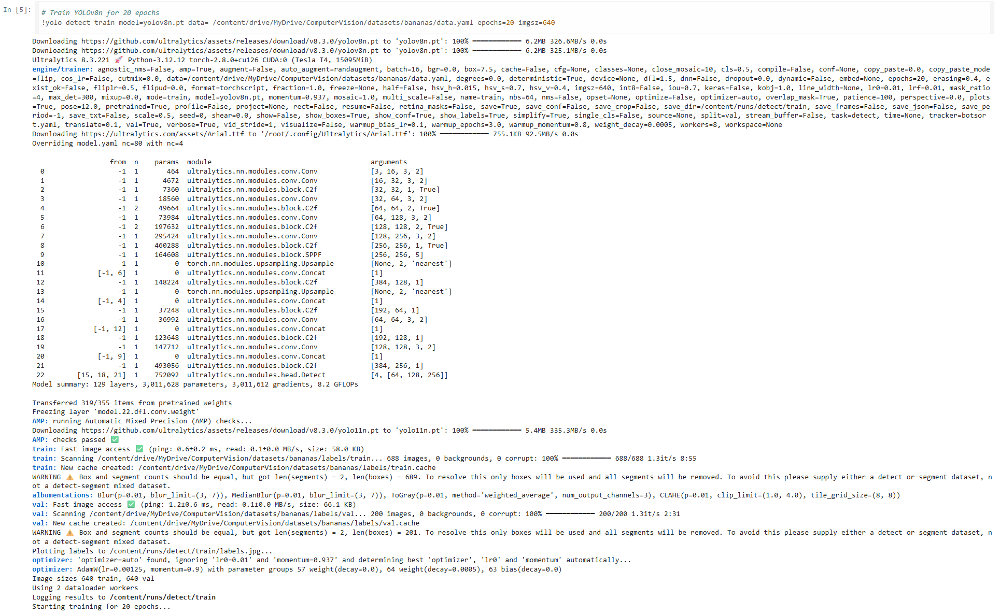
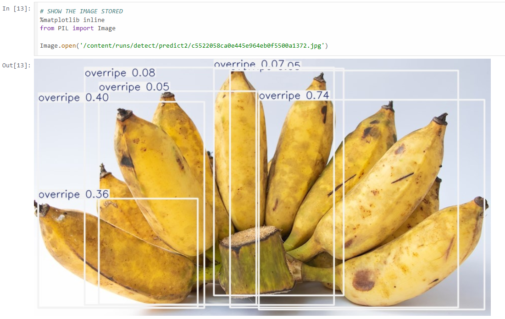

YOLOv8 Object Detection Pipeline
Problem Statement & Objective
Training a custom computer vision model to accurately detect and classify the ripeness stages of fruit in raw images.
The objective was to configure, train, and evaluate an Ultralytics YOLOv8 object detection model on a custom dataset to categorize bananas into four distinct classes: unripe, ripe, overripe, and rotten.

Configuring the YOLOv8 architecture and custom dataset parameters
Architecture & Tech Stack
- Language: Python
- Core Concepts: Computer Vision, Object Detection, Bounding Box Classification
- Frameworks & Models: PyTorch, Ultralytics YOLOv8

Final model inference displaying bounding boxes and confidence scores
Implementation Details
- Dataset Preparation: Processed and formatted a custom image dataset with annotated bounding boxes corresponding to the four ripeness classifications.
- Model Training: Fine-tuned the pre-trained YOLOv8 model weights using PyTorch, optimizing hyperparameters to improve bounding box precision and recall.
- Inference & Evaluation: Deployed the trained weights to run inference on test images, successfully generating accurate bounding boxes with high confidence scores for multi-class detection.